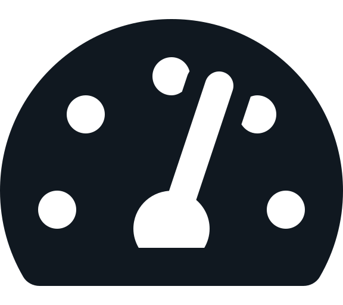

8 września 2020
Na co musisz zwrócić uwagę wybierając wykonawcę Twojej strony internetowej?
Myślisz o stronie internetowej dla siebie lub Twojej firmy? Jeśli tak, zapewne szukasz jej wykonawcy. Wykonawców stron są tysiące, jak wybrać tego właściwego?
Poniżej znajdziesz proste w zastosowaniu porady, które pozwolą Ci w kilka chwil zweryfikować potencjalnego wykonawcę Twojej strony.
Wpisując w wyszukiwarkę frazę „strony internetowe Kraków” – otrzymuję około 130 milionów, tak milionów, wyników. Pierwsze 3 lub 4 wyniki to płatne reklamy, kolejne to firmy inwestujące setki, a raczej tysiące złotych miesięcznie w tzw. SEO aby na tej pozycji się pojawić.
Szukam na facebook’u – znajdę kilkaset grup, a jeśli w nich zmieszczę zapytanie o ofertę otrzymam kilkadziesiąt, a może i kilkaset odpowiedzi, każdy twierdzi, że jest najlepszy i zrobi wszystko najlepiej na świecie…
Jak się w tym połapać?
Wspomniałem o pozycjonowaniu czyli SEO – search engine optimization – optymalizację dla silników wyszukiwarek. Można tutaj trochę „oszukiwać”, jednak jest pewna baza, która nie wymaga dodatkowych wydatków. To podstawy podstaw, często zaniedbywane a bardzo istotne, aby Twoja strona była dobrze odbierana przez wyszukiwarki, a co najważniejsze przez użytkowników czyli Twoich Klientów, zaraz dowiesz się jakie.
Poprawna struktura HTML
Tak wiem, zapewne nic Ci to nie mówi, zaraz postaram się to krótko wyjaśnić.
HTML to język programowania, choć nie wszyscy tak uważają, który stanowi podstawę treści zamieszczanych na stronie internetowej. Jak każdy język ma on pewne zasady stosowania – jeśli piszesz jakiś tekst używasz spacji, nowych linii, interpunkcji, pogrubień czy podkreśleń – podobnie w HTML, aby zapis był poprawny i zrozumiały należy dbać o zachowanie określonych zasad. Nie wiesz jakie to zasady? Nieważne, mamy ogólnodostępne narzędzia aby sprawdzić czy dana strona, a właściwie jej „kod HTML” jest napisany zgodnie z zasadami.
Jak to zrobić?
Odwiedź stronę Markup Validation Service podaj adres internetowy strony firmy, której „zatrudnienie” rozważasz, kliknij „Check” i sprawdź czy pojawią się błędy (error). O ostrzeżeniach (warning) nie będziemy się tutaj rozpisywać, każdy ich przypadek wymaga dokładniejszej analizy.
Możesz również sprawdzić w ten sposób strony z portfolio firmy, przekonasz się czy dba ona o jakość kodu na stronach swoich Klientów. Jeśli na stronie firmy pojawiły się błędy, na stronach jej Klientów w większości przypadków również je znajdziesz.
Czy chcesz mieć podstawowe, banalne do wychwycenia, błędy na swojej stronie internetowej? Raczej nie… Czy zatrudnisz firmę, która sama nie dba o podstawy na swojej stronie i na stronach swoich Klientów?
Jeśli posiadasz już stronę internetową możesz sprawdzić ją w powyżej opisany sposób, zajmie to kilkanaście sekund, ciekaw jestem wyniku.
Szybkość ładowania strony
To bardzo istotny element odczuć użytkownika Twojej strony internetowej. Jeśli strona ładuje zbyt wolno, zniechęca to użytkownika do jej obejrzenia, Twój potencjalny Klient zamyka okno przeglądarki lub przełącza je na inne. W konsekwencji, treści które chcesz mu przekazać nie docierają do niego i raczej nie będzie Twoim Klientem.
Mamy dostępnych setki prostych w użyciu narzędzi, które w kilkanaście sekund dadzą odpowiedź na pytania: czy strona firmy, którą rozważam zatrudnić ładuje się szybko, czy strony jej klientów ładują się szybko, czy moja strona ładuje się szybko?
Proponuję sprawdzić na początek PageSpeed Insights oferowane przez Google. Podobnie jak wcześniej, wklejamy link do strony, klikamy „analizuj” po kilku sekundach otrzymujemy wynik z uwzględnieniem telefonów komórkowych oraz komputerów – jeśli nie widzimy wyniku powyżej 80, a najlepiej w kolorze zielonym strona ładuje się zbyt wolno... Nie zagłębiaj się w szczegóły, to nie Twoja praca, zwróć uwagę zwłaszcza na wynik dla komórek – obecnie większość użytkowników internetu przegląda jego zasoby – czyli również Twoja stronę – za pomocą smartphone’a a nie komputera.
Aby skonfrontować wynik Google z innymi narzędziami możesz skorzystać np. z GTMetrix wynik poza ogólną oceną zawiera więcej szczegółowych informacji, jednak są one bardziej użytecze dla mnie niż dla Ciebie
Oczywiście to nie wszystkie aspekty dobrego wyboru wykonawcy Twojej strony internetowej, ale miało być krótko i przystępnie dla Ciebie, dlatego tutaj się zatrzymamy.
Już wiesz jak w ciągu kilku minut sprawdzić potencjalnego wykonawcę Twojej strony internetowej, a także Twoją stronę, jeśli takową już posiadasz.
Wyświetliły się błędy lub ostrzeżenia w HTML, a może prędkość ładowania Twojej strony jest zbyt niska?
Napisz do nas, razem możemy to naprawić!
wróć do bloga